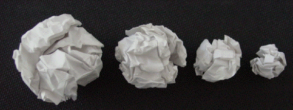

|  |
| Crumple pieces of paper of different sizes and measure the
diameters of the paper balls. |
| One experiment gave the results on the left. |
| Plotting Log(mass) vs Log(diam), we see the points fall almost
along a straight line of slope 2.5. |
|
| This data supports a power law relation of the form |
| mass = k⋅diam2.5 |
| Crumpling the paper introduces spaces of a range of sizes. There
is a hierarchy of space sizes, a few large, many small. |
| Consequently, a crumpled paper ball is a fractal. |
| You have been manufacturing fractals as long as you've
been crumpling paper and tossing it in the wastebasket. |
Return to